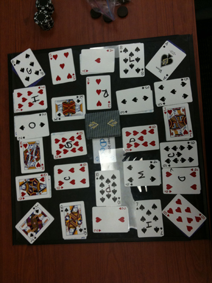

Game Analysis Document
About the Game
SpeedDeck is a game like no other. Not only does it require good hand eye coordination
but also fast reflexes, a good eye, and mainly a good memory. In addition to these, it requires lots of strategies
that may not be completely apparent at the start of the game.

Rules of the Game
1. Players must start with their current chip in play under the table.
2. No hovering over the SpeedDeck game board. Player�s hands must
be in one of two positions 1) under the table or 2) placing their chip
on a card.
3. If a player put their chip on the wrong card they cannot play the next
card (loosing one turn) and receives a foul chip worth negative five
(-5) points.
4. Each turn one card is removed from SpeedDeck draw pile and placed
face up beside it.
5. To win the card, players must find and be the first to place their
current chip in play on the card with the same color and value
located on the SpeedDeck game board.
6. The winner places his current chip in play on the card he just won.
7. When a card is flipped over from the SpeedDeck draw pile, and
everyone rushes in to place their chip on the winning card for that
turn, the player whose chip is the lowest (closest) to the game
board wins the turn.
8. If there is a tie between players they will enter into a tiebreaker
round. A player not involved in the tie must flip one more card from
the SpeedDeck draw pile. Whoever wins this playoff gets both the
playoff card points and the tiebreaker card points.
9. Each round ends once all cards have been flipped from the
SpeedDeck draw pile and players have captured all cards on the
game board.
10. Total each player�s score at the end of each round by adding
up the value of each card, which they won, minus foul points.
11. Repeat this process for all remaining rounds totaling a
player�s score for all rounds to determine overall game winner(s).
Atomic Strategies of the Game
1."Keep your eye on the high cards" - This is the most important strategy in the game
and is often overlooked. If you know where the high cards are before the card is turned over,
chances of winning that card are greatly increased.
2."Study the board" - It's impossible to remember the location of each card, but if you
continuously study the board, the chances of you remembering where the card is is greatly
increased.
3."Map out the colors" - Try to remember where the different colors are so if a red card is
flipped you can easily ignore the black cards and find the one you need.
4."Keep your hand close to the edge" - Your hand must stay under the
table, but if you keep your hand as close to the edge as possible you can reach the cards much
quicker.
5."If you see a chip, skip" - Ignore cards that have a chip on it, this will bring down the
total number of cards that you need to locate allowing you to find the needed card much quicker.
6."Keep your eyes on the board" - Never look away from the board during a round. The more
you stare at the board and the more focused you are the quicker you can react.
Outcomes of the Game
There are 3 possible outcomes: Win, Lose, Tie. The winner is determined by whoever has the most
points at the end of all the rounds. After lots and lots of playtesting,
there has yet to be a tie, but it is completely possible, just very unlikely. There is a
total of 180 possible points to win. Here is a spreadsheet of most of the games played:
Playtest Results
Strategic Interdependance
One common answer to the question "Is there a need of strategy in this was?" was "No, just fast reflexes". This is
a big misconception and its main the reason why I, Tyler Getson (one of the creators), only lost
once out of the roughly 30 times I playtested. There are many hidden strategies that are easily overlooked,
all of which give the player a huge advantage over the other players. The more locations of
cards you can memorize, the better you do. Especially if you memorize where the higher cards are.
Reflexes are a big part of the game, but reflexes are no match for wits.
{kind=link}
{kind=link}
{kind=link}
{kind=link}